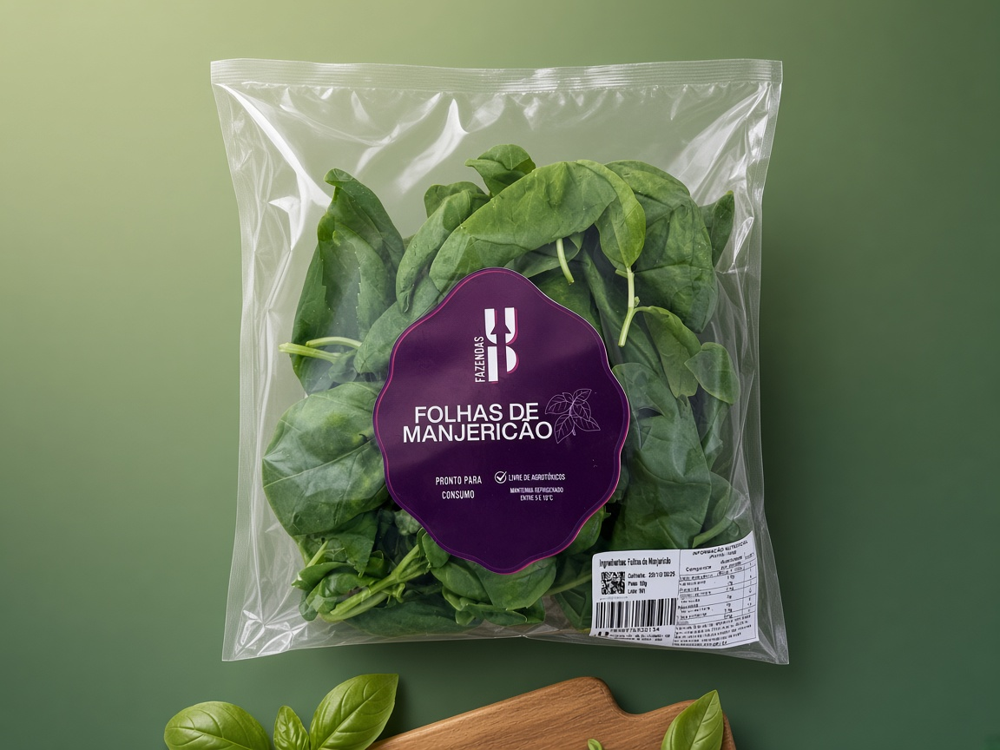
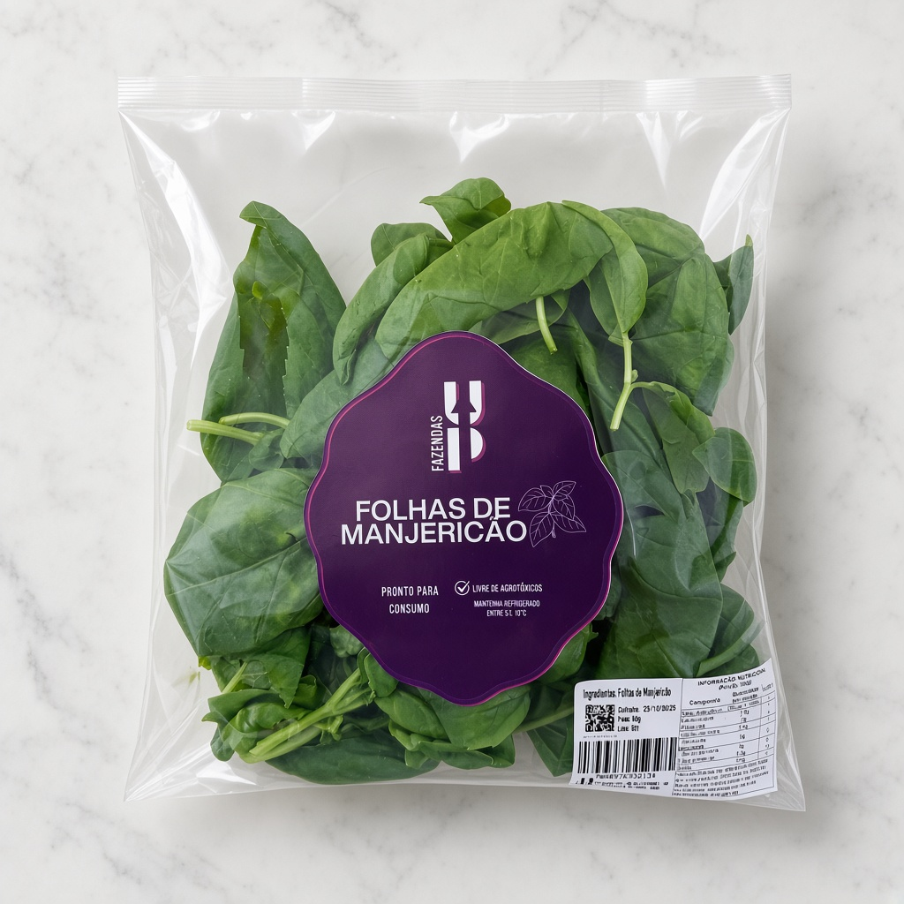

Produto
Do cultivo à mesa, sem rodeios.
Embalagem transparente que mostra a qualidade das folhas, selo de pronto para consumo e orientação clara de refrigeração.
- Livre de agrotóxicos
- Pronto para consumo
- Manter refrigerado entre 5 e 10 °C

Fundos para apresentação
O produto saiu do OSB original e ganhou cenários de catálogo — slate, hortelã e mármore de estúdio.

50 g
Peso líquido da embalagem
5–10 °C
Faixa de refrigeração recomendada
0 agrotóxicos
Cultivo limpo, folha a folha